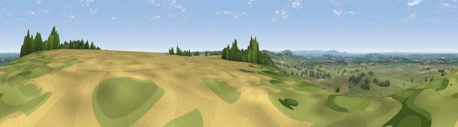

Viewpoint near Middle Tysoe
#14361 in England · top 21% of its area beats it · near Middle TysoeWhere it is
The exact computed spot (SP 35475 44825). Click the marker for map links.
The view, rendered

A 360° render of this exact spot computed from the terrain model, tree cover and land cover — summer colours, afternoon light, calibrated against photographs of famous viewpoints. Real trees, hedges and buildings will differ in detail.
The panorama
Grey silhouette: terrain skyline in each direction (720 bearings, Earth curvature and refraction included). Dashed green: skyline with trees (+15 m) and buildings (+8 m) as obstacles. Blue strip: how far the ground is visible on each bearing.
Where the view opens
Wedge length = distance to the farthest visible ground on that bearing (vegetation-aware). Rings at 10, 25 and 50 km.
What fills the view
64% grassland · 28% cropland · 7% woodland · 1% built-up
Angular shares of the visible panorama (visual magnitude), not map area. Landscape diversity 0.38 (0–1 Shannon).
Key numbers
More beautiful places nearby
The staircase of upgrades: each row has a higher view potential than everything closer. Driving times are estimates from straight-line distance, calibrated against real road routing — check an actual route before setting out.
| Place | Direction | Drive | Score |
|---|---|---|---|
| Sunrising Hill | NNE · 1 km | ~2 min | 66.8 |
| Viewpoint near Radway | NNE · 2 km | ~4 min | 70.5 |
| Viewpoint near Radway | NE · 5 km | ~10 min | 71.7 |
| Viewpoint near Ilmington | W · 15 km | ~27 min | 72.6 |
| Viewpoint near Meon Vale | W · 18 km | ~31 min | 77.0 |
| Broadway Hill | WSW · 26 km | ~41 min | 77.7 |
| Viewpoint near Elmley Castle | W · 38 km | ~57 min | 80.5 |
| Bredon Hill | W · 40 km | ~59 min | 83.0 |
52.10063, -1.48352 · source: screening · position refined by local search. Computed location — check access rights before visiting.